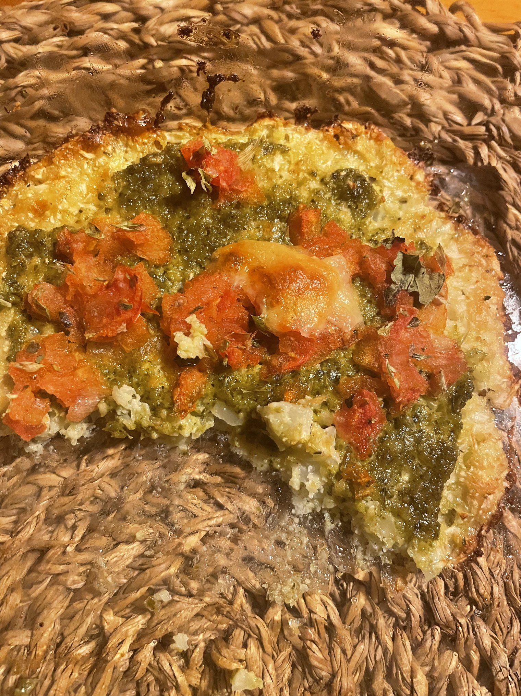

Pizza de coliflor con pesto y tomate
Ingredientes
1×
- 0.5 coliflor
- 1 huevo
- 30 g de mozzarella
- 2 cdas de pesto
- 1 tomate

Preparación
Paso 1
Triturar 0.5 coliflor hasta que parezca arroz, cocerla unos minutos al microondas o al vapor y escurrirla bien con un trapo.
Paso 2
Mezclar con 1 huevo y 30 g de mozzarella rallada, extender la masa fina sobre papel de horno y hornear 20min a 200ºC.
Paso 3
Cubrir con 2 cdas de pesto y 1 tomate en dados y hornear 10min más.
Resumen
0.5 coliflor
Triturar cocerla escurrirla
1 huevo
30 g de mozzarella
Mezclar extender hornear 200ºC
2 cdas de pesto
1 tomate
Cubrir hornear